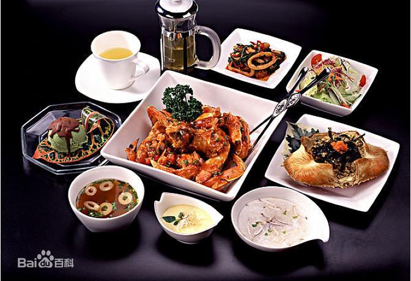

西餐拼音Xīcān；西餐英文名Western cuisine；西餐是西方式餐饮的统称，广义上讲，也可以说是对西方餐饮文化的统称。
“西方”习惯上是指欧洲国家和地区，以及由这些国家和地区为主要移民的北美洲、南美洲和大洋洲的广大区域，因此西餐主要指代的便是以上区域的餐饮文化。
西方人把中国的菜点叫做“中国菜”（Chinese food）、把日本菜点叫做日本料理、韩国菜叫做韩国料理等等，他们不会笼而统之地称之为“东方菜”，而是细细对其划分，依其国名具体而命名之。
实际上，西方各国的餐饮文化都有各自的特点，各个国家的菜式也都不尽相同，例如法国人会认为他们做的是法国菜、英国人则认为他们做的菜是英国菜。西方人自己并没有明确的“西餐”概念，这个概念是中国人和其他东方人的概念。
这是因为中国人和其他东方人在刚开始接触西方饮食时还分不清什么是意大利菜，什么是法国菜，英国菜，只能有一个笼统的概念。当时中国人就笼统地称其为“番菜”，“番”即西方的意思。中国古人常常以为中国就是世界的中心，看待其他国家和地区都习惯带上一种贬意，把东方称之为“夷”、西方称之为“番”、北方称之为“胡”、南方则称之为“蛮”。因此，所谓的“番菜”指的就是西餐。
另外，就西方各国而言，由于欧洲各国的地理位置都比较近，在历史上又曾出现过多次民族大迁移，其文化早已相互渗透融合，彼此有了很多共同之处。再者，西方各国的宗教信仰主要是天主教、东正教和新教（只有很少一部分人信仰伊斯兰教），它们都是基督教的主要分支，因此在饮食禁忌和用餐习俗上也大体相同。至于南、北美洲和大洋洲，其文化也是和欧洲文化一脉相承的。因此，不管西方人是否有明确的“西餐”概念，中国人民和其他东方人都对这部分大体相同，而又与东方饮食迥然不同的西方饮食文化统称为“西餐”。 [1]
但近几个年代以来，随着东西方文化的不断撞击、渗透与交融，东方人民已经逐渐了解到西餐中各个菜式的不同特点，并开始区别对待了。一些高级饭店也分别开设了法式餐厅、意式餐厅等，西餐作为一个笼统的概念逐渐趋于淡化，但西方餐饮文化作为一个整体概念还是会继续存在的。
现代西餐主要分类
法式菜肴
西菜之首。
法国人一向以善于吃并精于吃而闻名，法式大餐至今仍名列世界西菜之首。 [1]
法式菜肴的特点是：选料广泛（如蜗牛、鹅肝都是法式菜肴中的美味），加工精细，烹调考究，滋味有浓有淡，花色品种多；法式菜还比较讲究吃半熟或生食，如牛排、羊腿以半熟鲜嫩为特点，海味的蚝也可生吃，烧野鸭一般以六成熟即可食用等；法式菜肴重视调味，调味品种类多样。用酒来调味，什么样的菜选用什么酒都有严格的规定，如清汤用葡萄酒，海味品用白兰地酒，甜品用各式甜酒或白兰地等；法国菜和奶酪，品种多样。法国人十分喜爱吃奶酪、水果和各种新鲜蔬菜。 [1]
法式菜肴的名菜有：马赛鱼羹、鹅肝排、巴黎龙虾、红酒山鸡、沙福罗鸡、鸡肝牛排等。 [1]
英式菜肴
简洁与礼仪并重。
英国的饮食烹饪，有家庭美肴之称。 [1]
英式菜肴的特点是：油少、清淡，调味时较少用酒，调味品大都放在餐台上由客人自己选用。烹调讲究鲜嫩，口味清淡 ，选料注重海鲜及各式蔬菜，菜量要求少而精。英式菜肴的烹调方法多以蒸、煮、烧、熏、炸见长。 [1]
英式菜肴的名菜有：鸡丁沙拉、烤大虾苏夫力、薯烩羊肉、烤羊马鞍、冬至布丁、明治排等。 [1] 同时fish and chips（鱼与薯条）是大众最熟悉的英式餐品。
意式菜肴
西菜始祖。
在罗马帝国时代，意大利曾是欧洲的政治、经济、文化中心，虽然后来意大利落后了，但就西餐烹饪来讲，意大利却是始祖，可以与法国、英国媲美。 [1]
意式菜肴的特点是：原汁原味，以味浓著称。烹调注重炸、熏等，以炒、煎、炸、烩等方法见长。 [1]
意大利人喜爱面食，做法吃法甚多。其制作面条有独到之处，各种形状、颜色、味道的面条至少有几十种，如字母形、贝壳形、实心面条、通心面条等。意大利人还喜食意式馄饨、意式饺子等。 [1]
意式菜肴的名菜有：通心粉素菜汤、焗馄饨、奶酪焗通心粉、肉末通心粉、比萨饼等。 [1]
美式菜肴
营养快捷。
美国菜是在英国菜的基础上发展起来的，继承了英式菜简单、清淡的特点，口味咸中带甜。美国人一般对辣味不感兴趣，喜欢铁扒类的菜肴，常用水果作为配料与菜肴一起烹制，如菠萝局火腿、菜果烤鸭。喜欢吃各种新鲜蔬菜和各式水果。 [1]
美国人对饮食要求并不高，只要营养、快捷，讲求的是原汁鲜味。但对肉质的要求很高，如烧牛柳配龙虾便选取来自美国安格斯的牛肉。只有半生的牛肉才有美妙的牛肉原汁。
相对于传统西餐的繁琐礼仪，美国人的饮食文化简单多了。餐台上并没有多少刀叉盘碟，仅放着最基本的刀叉勺子各一把。据说，只有在非常正式的宴会或家庭宴客时，才会有较多的规矩和程序。
美式菜肴的名菜有：烤火鸡（PS：烤火鸡一般不食用，感恩节前夕会将各种配菜塞入火鸡内烘烤）、橘子烧野鸭、美式牛扒、苹果沙拉、糖酱煎饼等。各种派是美式食品的主打菜品。 [1]
俄式菜肴
西菜经典。
沙皇俄国时代的上层人士非常崇拜法国，贵族不仅以讲法语为荣，而且饮食和烹饪技术也主要学习法国。但经过多年的演变，特别是俄国地带，食物讲究热量高的品种，逐渐形成了自己的烹调特色。俄国人喜食热食，爱吃鱼肉、肉末、鸡蛋和蔬菜制成的小包子和肉饼等，各式小吃颇有盛名。 [1]
俄式菜肴口味较重，喜欢用油，制作方法较为简单。口味以酸、甜、辣、咸为主，酸黄瓜、酸白菜往往是饭店或家庭餐桌上的必备食品。烹调方法以烤、熏腌为特色。俄式菜肴在西餐中影响较大，一些地处寒带的北欧国家和中欧南斯拉夫民族人们日常生活习惯与俄罗斯人相似，大多喜欢腌制的各种鱼肉、熏肉、香肠、火腿以及酸菜、酸黄瓜等。 [1]
俄式菜肴的名菜有：什锦冷盘、罗宋汤、鱼子酱、酸黄瓜汤、冷苹果汤、鱼肉包子、黄油鸡卷等。哈尔滨由于历史的原因，现尚保存有正宗的俄式西餐。 [1]
德式菜肴
啤酒、自助。
德国人对饮食并不讲究，喜吃水果、奶酪、香肠、酸菜、土豆等，不求浮华只求实惠营养，首先发明自助快餐。 [3]
传统菜品：蔬菜沙拉、鲜蘑汤、焗鱼排等。
德国人喜喝啤酒，每年的慕尼黑啤酒节大约要消耗掉100万公升啤酒。 [3]
其他菜系
希腊菜：以清淡典雅、原汁原味为特点。
西班牙-葡萄牙菜肴以米饭著称，常是与焖烩的肉、海鲜为佐。
东欧菜系与俄式相近。
通常点牛排，或是在高级一点的餐厅点牛肉汉堡，服务生都会这样问你How do you like it cooked? 回答的方式也有几种：全熟是well done，七分熟是medium well，五分熟是medium，三分熟是medium rare，一分熟是 rare。
就餐礼仪
1、最得体的入座方式是从左侧入座。当椅子被拉开后，身体在几乎要碰到桌子的距离站直，领位者会把椅子推进来，腿弯碰到后面的椅子时，就可以坐下来了。就座时，身体要端正，手肘不要放在桌面上，不可跷足，与餐桌的距离以便于使用餐具为佳。餐台上已摆好的餐具不要随意摆弄。将餐巾对折轻轻放在膝上。 [1]
2.、使用刀叉进餐时，从外侧往内侧取用刀叉，要左手持叉，右手持刀；切东西时左手拿叉按住食物，右手执刀将其切成小块，用叉子送入口中。使用刀时，刀刃不可向外。进餐中放下刀叉时应摆成“八”字型，分别放在餐盘边上。刀刃朝向自身，表示还要继续吃。每吃完一道菜，将刀叉并拢放在盘中。如果是谈话，可以拿着刀叉，无需放下。不用刀时，可用右手持叉，但若需要作手势时，就应放下刀叉，千万不可手执刀叉在空中挥舞摇晃，也不要一手拿刀或叉，而另一只手拿餐巾擦嘴，也不可一手拿酒杯，另一只手拿叉取菜。要记住，任何时候，都不可将刀叉的一端放在盘上，另一端放在桌上。 [1]
用餐时，上臂和背部要靠到椅背，腹部和桌子保持约一个拳头的距离。两脚交叉的坐姿最好避免。
3.、喝汤时不要啜，吃东西时要闭嘴咀嚼。不要舔嘴唇或咂嘴发出声音。如汤菜过热，可待稍凉后再吃，不要用嘴吹。喝汤时，用汤勺从里向外舀，汤盘中的汤快喝完时，用左手将汤盘的外侧稍稍翘起，用汤勺舀净即可。吃完汤菜时，将汤匙留在汤盘（碗）中，匙把指向自己。 [1]
4、吃鱼、肉等带刺或骨的菜肴时，不要直接外吐，可用餐巾捂嘴轻轻吐在叉上放入盘内。如盘内剩余少量菜肴时，不要用叉子刮盘底，更不要用手指相助食用，应以小块面包或叉子相助食用。吃面条时要用叉子先将面条卷起，然后送入口中。 [1]
5、 面包一般掰成小块送入口中，不要拿着整块面包去咬。抹黄油和果酱时也要先将面包掰成小块再抹。 [1]
6、吃鸡时，欧美人多以鸡胸脯肉为贵。吃鸡腿时应先用力将骨去掉，不要用手拿着吃。吃鱼时不要将鱼翻身，要吃完上层后用刀叉将鱼骨剔掉后再吃下层吃肉时，要切一块吃一块，块不能切得过大，或一次将肉都切成块。 [1]
7、 喝咖啡时如愿意添加牛奶或糖，添加后要用小勺搅拌均匀，将小勺放在咖啡的垫碟上。喝时应右手拿杯把，左手端垫碟，直接用嘴喝，不要用小勺一勺一勺地舀着喝。吃水果时，不要拿着水果整个去咬，应先用水果刀切成四瓣再用刀去掉皮、核、用叉子叉着吃。 [1]
8、用刀叉吃有骨头的肉时，可以用手拿着吃。若想吃得更优雅，还是用刀较好。用叉子将整片肉固定（可将叉子朝上，用叉子背部压住肉），再用刀沿骨头插入，把肉切开。最好是边切边吃。必须用手吃时，会附上洗手水。当洗手水和带骨头的肉一起端上来时，意味着“请用手吃”。用手指拿东西吃后，将手指放在装洗手水的碗里洗净。吃一般的菜时，如果把手指弄脏，也可请侍者端洗手水来，注意洗手时要轻轻地洗。 [1]
9、 吃面包不可蘸调味汁吃到连调味汁都不剩，这是对厨师的礼貌。注意不要把面包盘子“舔”得很干净，而要用叉子叉住已撕成小片的面包，再蘸一点调味汁来吃，这才是雅观的做法。 [1]
6个“M”
如何品味西餐文化，研究西餐的学者们经过长期的探讨和总结认为：吃西餐应讲究以下6个“M”。 [4]
“Menu”（菜谱）
当您走进咖啡馆或西餐馆时，服务员会先领您入座，待您坐好后，首先送上来的便是菜谱。菜谱被视为餐馆的门面，老板也一向重视，采用最好的材料做菜谱的封面，有的甚至用软羊皮打上各种美丽的花纹，显得格外典雅精致。 [4]
点菜：打开菜谱后，看哪道菜是以店名命名的，这道菜可千万不要错过。因为那家餐馆是不会拿自己店的名誉来开玩笑的，所以他们下工夫做出的菜，肯定会好吃的，这道“招牌菜”大家一定要点。 [4]
另外要特别说明的一点是，不要以吃中餐的习惯来对待西餐的点菜问题：即不要对菜谱置之不理、不要让服务员为你点菜。在法国，就是戴高乐、德斯坦总统吃西餐也得看菜谱点菜的。因为看菜谱、点菜已成了吃西餐的一个必不可少的程序，是一种优雅生活方式的表现。 [4]
“Music”（音乐）
豪华高级的西餐厅，通常会有乐队，演奏一些柔和的乐曲，一般的西餐厅也播放一些美妙典雅的乐曲。但，这里最讲究的是乐声的“可闻度”，即声音要达到“似听到又听不到的程度”，就是说，要集中精力和友人谈话就听不到，在休息放松时就听得到，这个火候要掌握好。 [4]
“Mood”（气氛）
吃西餐讲究环境雅致，气氛和谐。一定要有音乐相伴，桌台整洁干净，所有餐具一定要洁净。如遇晚餐，要灯光暗淡，桌上要有红色蜡烛，营造一种浪漫、迷人、淡雅的气氛。 [4]
“Meeting”（会面）
也就是说和谁一起吃西餐，这是要有选择的。吃西餐的伙伴最好是亲朋好友或是趣味相投的人。吃西餐主要是为联络感情，最好不要在西餐桌上谈生意。所以在西餐厅内，氛围一般都很温馨、少有面红耳赤的场面出现。 [4]
“Manner”（礼节）
这一点指的是“吃相”和“吃态”。既然是吃西餐就应遵循西方的习俗，勿有唐突之举，特别是在手拿刀叉时，若手舞足蹈，就会“失态”。 [4]
刀叉的拿法一定要正确：应是右手持刀，左手拿叉。用刀将食物切成小块，然后用叉送入口内。一般来讲，欧洲人使用刀叉时不换手，一直用左手持叉将食物送入口内。美国人则是切好后，把刀放下，右手持叉将食物送入口中。但无论何时，刀是绝不能送物入口的。西餐宴会，主人都会安排男女相邻而坐，讲究“女士优先”的西方绅士，都会表现出对女士的殷勤。 [4]
“Meal”（食品）
中餐是以“味”为核心，西餐则以营养为核心，至于味道那是无法同中餐相提并论的。
爵士牛排
八十年代成立于台湾，1993年在青岛开设第一家店，到2016年已经开设300多家连锁店，主要经营主流西方西餐菜品，菜品口味，就餐环境，店内服务都是值得推荐的。
蒸烩煮
由曾经在总统府、长荣航空服务的台湾人在国内创办的中西便利餐饮企业，按美式排酸方法加工生产单片包装的安格斯牛排、腌制牛排、商务套餐用调理包。
胜豪客牛排
意大利品牌，创建于1958年。符合年轻人、白领。现大陆40多家连锁分店国外20多家连锁分店。
元盛食品
台湾品牌 创建于创立于1995年，总投资1950万美元，全国高档西餐厅，家庭，白领，符合各个生活阶层人士。
佳客来
台湾品牌 创建于1998年，符合年轻人、白领。
豪客来
厦门牌 创建于1993年，符合外卖、快餐。
局百犊牛排管理机构
中国内地品牌，创建于2006年的温州。
豪享来
创建于1993年，符合外卖、快餐。
王品台塑牛排
台湾品牌创于1993年，符合商务，白领。以全熟为主的招牌菜“王品台塑牛排”。现大陆地区14家店，北京3家。